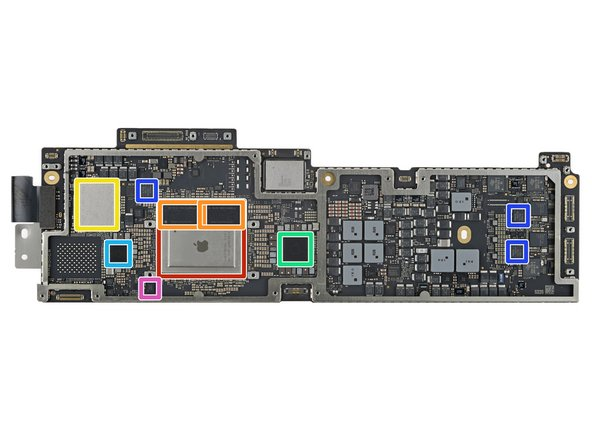

Use one documented modular PC, one thin or partly soldered laptop, and one different platform such as a Mac or Chromebook. Where you lack a machine, use the exact illustrated manual for a parts-and-diagnostic case. Pick a different hardware type or firmware workflow each time. T57 · How laptop power, firmware, storage and operating systems meet explains how hardware model, architecture and operating system change the choice.
Find the parts before disconnecting anything. Compare the layout with the exact model’s service guide. 1 · Cooling fan. 2 · M.2 SSD. 3 · Battery. 4 · Memory module area. Photo by Ogidya, resized, with labels added. Original photo · CC BY 4.0.

This 2022 M2 Air has its memory alongside the processor and NAND storage on the logic board. Use the model’s teardown chip map to compare with a removable PC SSD. Photo by Arthur Shi and iFixit contributors, with added labels. Original guide · CC BY-NC-SA 3.0.
Before-and-after comparison, adjacent functions tested, boot and sleep results, remaining limitations and data outcome.
Practise three realistic jobs
A no-boot Windows PC and a retailer-supplied preboot error. Identify whether data access or drive health changes the job before replacing storage.
A physically damaged port, intermittent headphone channel or flex fault on a documented modular machine. Compare a known-good accessory and prove whether the failure follows the module.
A Mac or Chromebook that starts into a preboot screen. Identify the official diagnostic and work out what recovery would preserve or erase. On a documented spare machine test the available serviceable modules.
Retest the original symptom and report the conditions where it was observed. A transparent case record makes a better portfolio item than a claim that a part was replaced.